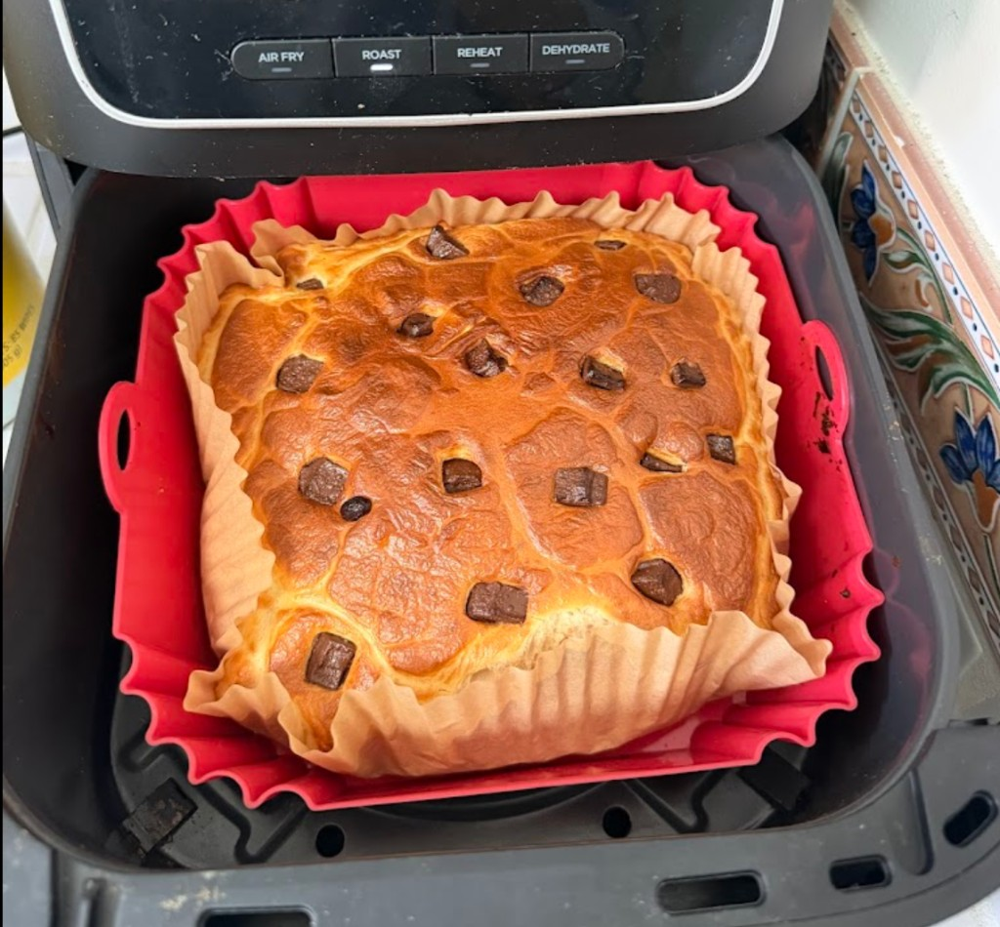
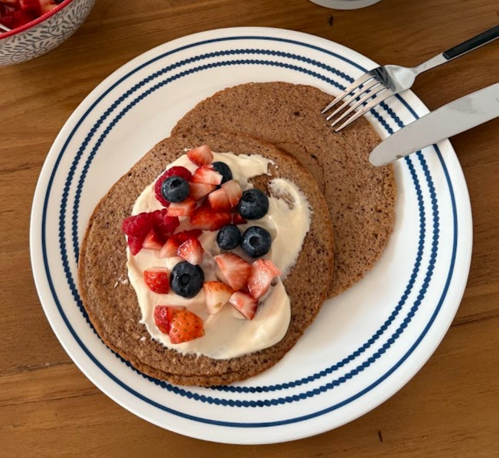
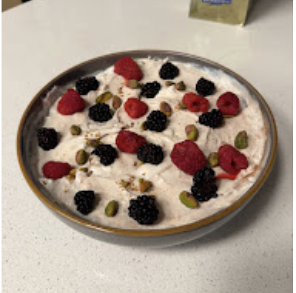
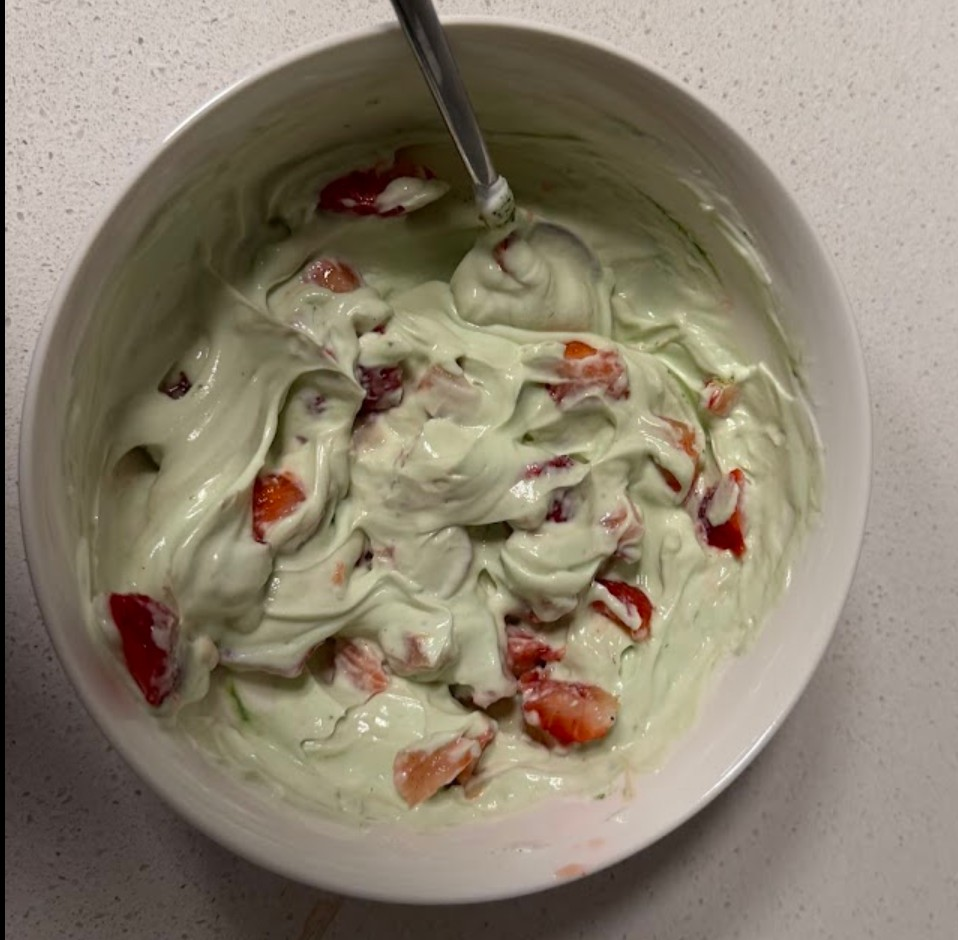

A year of notes on metabolism, hormones, food noise, and five months on a low-dose GLP-1 — written for the women who've been told the only fix is more hormones.
The angle of this post is not weight loss. The weight piece is the loudest part of the GLP-1 conversation and also, for me, the least interesting one.
What I was actually testing: whether hitting the metabolic side of PCOS (insulin resistance, food noise) could move the hormonal side — instead of the usual default of pumping women full of exogenous hormones to mask symptoms. I started a low dose of semaglutide in February 2026, after years of trying everything else.
End of April 2026, I got a real period — non-medical, non-hormone-induced — for the first time in about 1.5 years. No side effects from the GLP-1. That's the headline.
Some of you know this part already, but for new readers, the short version:
In December 2022, I was hospitalized with Guillain-Barré syndrome, an extremely rare autoimmune disorder where your immune system attacks your peripheral nerves. I was paralyzed for almost a month, on a ventilator, and frankly nearly died. I've written about it elsewhere, but the part that's relevant here is what happened to my body after.
Because I couldn't eat during hospitalization (internal paralysis + ventilation), and because re-learning to eat took weeks after discharge, my relationship with food got really strange. I lost a chunk of my gut microbiome. My hunger and fullness cues basically disappeared. For months I either forgot to eat or ate the wrong thing and felt awful.
I clawed back as much of my gut as I could the boring way: macrodosing on 20–50 different vegetables and legumes and slowly reintroducing variety. (Separate post.) But the metabolic and hormonal damage went deeper. I have severe insulin resistance from PCOS (which, FYI, was just officially renamed to PMOS — polyendocrine metabolic ovarian syndrome — to better reflect that it's a multisystem metabolic condition, not an ovary-cyst thing. I'm going to keep using PCOS in this post because that's still what most people search for).
Fast forward to 2024. I was going on the academic job market. Stress was extreme. In December 2024, my period stopped. PCOS symptoms got worse. The only way I survived that year was through a very strict diet and exercise regime (which I wrote about in my academic job market post — the food/exercise sections are basically the prequel to this one).
Job market ended. May 2025 came. Still no period.
And on top of that, my biggest day-to-day struggle wasn't weight — it was food noise. Because of insulin resistance, figuring out when to eat, what to eat, and how much, was a genuinely hard cognitive task. I'd either undereat (and crash) or overeat (and crash differently). Life was loud.
I had tried, in good faith and for long stretches:
By November 2025, still no period, my doctors were genuinely worried. Going that long without bleeding creates real ovarian and endometrial cancer risk. So they put me on a very high dose of exogenous hormones to medically induce a bleed. In December, I got a forced period. After a full year.
The hormones, though? Catastrophic side effects for me. Depression. Mood swings. Nausea. Extreme swelling. It was awful — and crucially, it didn't fix anything underneath. The hormones cover symptoms. The food noise was still there. The insulin resistance was still there.
In January 2026, with everything going on, I made the call: I can't keep doing this. I came off the hormones. Predictably, the period vanished again.
One of the things I love most — and I think I've mentioned this before — is the framing in Tiny Experiments by Anne-Laure Le Cunff. Treat your life as a series of experiments. Try, observe, adjust, repeat. The Guillain-Barré experience cracked me wide open on this point: I no longer trust that "the standard treatment" is the right treatment for me just because it's standard.
Surviving Guillain-Barré also turned me into a low-key autoimmune-disease nerd. I started reading Gabor Maté's When the Body Says No, which makes the case — well-supported in the psychoneuroimmunology literature — that chronic stress is deeply tangled up in autoimmune onset. Bessel van der Kolk's The Body Keeps the Score is the other obvious one.
So I went deep on the PCOS literature, and here's the thing nobody seemed to want to commit to:
Is it the hormonal imbalance that drives the insulin resistance? Or is it the insulin resistance that drives the hormonal imbalance? Most papers and most doctors say "both, it's a loop," and then proceed to treat only the hormonal side.
The default treatment pipeline is: birth control + spironolactone + metformin, maybe, and hope the metabolism sorts itself out. Almost nobody hits the metabolism first and bets on the hormones following.
So I formulated a hypothesis: If I fix the metabolism, maybe the hormones get pulled back into shape. And if not — at minimum, the food noise goes down, which alone would be life-changing.
After a lot of reading, I decided to run the experiment. Smallest available dose of a GLP-1 receptor agonist (semaglutide). Under medical supervision. Starting February 2026.
There's now a meaningful literature on GLP-1s for PCOS specifically — not just for weight loss in PCOS patients, but for the syndrome itself. A 2023 study in the Journal of Clinical Medicine followed obese PCOS patients on 0.5 mg weekly semaglutide and found that 80% of responders normalized their menstrual cycles. A two-year follow-up in Frontiers in Endocrinology showed free testosterone dropped significantly during treatment and didn't bounce back after stopping.
One thing worth flagging: most studies frame semaglutide for PCOS through the lens of weight loss and androgen reduction. There's solid evidence on how it affects testosterone in women and reduces androgen-driven symptoms. But specifically on cycle restoration as a primary endpoint, especially in non-obese or normal-weight PCOS women, there's less than you'd expect. So I was running my own experiment partly because the science hadn't quite caught up to my exact question.
Two design choices I want to flag, because they were deliberate:
1. Weekly injection, not daily pill. I picked the injection form (subcutaneous, once a week) specifically to eliminate the placebo channel. With a daily pill, you take it, you feel it kick in, you attribute the morning to the dose. With a weekly shot, I genuinely forget I'm on anything. There's no daily ritual, no daily cue. I'll go four or five days without thinking about it once.
2. I didn't tell my close friends. Same reason. If they knew, every "you seem different" would be filtered through the prior. I wanted clean observation from the outside. (Sorry, friends.)
Side effects after five months on my dose: zero. Genuinely none. No nausea, no GI stuff, no fatigue, nothing. So it's extremely easy to forget I'm on it, which works in favor of the no-placebo design but works against me when I'm trying to remember to inject on time.
The first month, what I noticed — and I want to be careful here because I was actively trying not to look for changes — was a sort of clearing. Brain fog lifting. Mood more stable. Better sleep. Anxiety quieter. I logged it. I assumed placebo, because of course I did.
And then the end of February happened.
End of February 2026, I went to stay with some of my closest friends. I'd stayed with these same friends back in June, during a really hard stretch for me, and again in November when I was on the high-dose hormones and felt like garbage.
This visit, on the last day, they were driving me to the airport. And — this is the part I keep telling people — they kind of hesitantly, sweetly turned to me and said something like:
"Hey, we want to ask you something. Are you okay? Because you seem really composed, and we're happy if you're really happy, but — you seem different. You seem… clearer. Back in June and November, you used to doze off mid-sentence, or your eyes would glaze over and you weren't really there. This trip you've been so present. Are you taking something? Are you on medication?"
And I genuinely was like, "What are you talking about?" — and then a second later remembered, oh right, I'm on semaglutide.
That was the moment the placebo defense collapsed. The outside view caught the change before I did. They had no priors. They weren't looking for it. They told me unprompted that I was different, and they specifically named clarity, presence, and being able to finish a sentence — not weight, not appetite, not any of the things people associate with this drug.
That's when I started writing this post in my head.
End of April 2026, after about five months on the low dose, I got a real period — non-medical, non-hormone-induced, on its own. No side effects. First one in roughly 1.5 years, and the reason I'm bothering to write this post.
Caveat as always: five months is short, one cycle is one cycle, and I want to see how it goes through the rest of the year. My doctors are monitoring with regular labs. But this is the first intervention I've tried (and I have tried a lot) where hitting the metabolic side actually moved the reproductive side, which is what I had hypothesized and what the GLP-1 / PCOS literature roughly predicts.
The bigger point: the medical default for PCOS women without a period is to medically induce a cycle with exogenous hormones, which a) feels terrible, b) doesn't fix the underlying issue, and c) tells your body nothing about how to do it on its own. The alternative — hitting the metabolic root and trusting the system to repair itself from there — exists, and is increasingly well-studied, and is barely talked about in standard care. If your doctor is offering you the third round of hormones to mask amenorrhea and nobody has even mentioned the metabolic angle, you are allowed to ask about it.
Okay, important caveats. If you take nothing else from this post, take these:
1. Talk to your doctors. Get monitored. Don't order this off the internet. The dose matters. The supervision matters. I have regular labs (thyroid, glucose, insulin, full hormone panel, kidney/liver function, lipids). My provider knows what I'm doing. If something went sideways, we'd catch it.
2. You MUST lift weights — and dial down the cardio. This is a shift from where I was on the job market, where I was doing a lot of HIIT and yoga and walking-everywhere cardio. On a GLP-1, that mix stopped working for me. GLP-1s can cause loss of lean mass alongside fat mass if you're not actively defending muscle, and excess cardio on top of a lower-calorie intake just accelerates the muscle loss and keeps cortisol elevated, which is the opposite of what I'm trying to do. So I traded most of the HIIT for heavy lifting, 3–4x a week, with progressive overload. I still walk a lot (steps remain non-negotiable) but I don't smash myself with cardio anymore. The horror stories you read about GLP-1s — sarcopenia, weakness, gaunt faces — are largely about people who lost weight without resistance training. Don't be that data point.
3. You MUST eat enough protein. The rule of thumb I follow, which is roughly the consensus for people on GLP-1s: ~0.7g of protein per pound of body weight per day, distributed across meals at around 30g per meal. For me that's somewhere around 100–110g a day, sometimes more on training days. Your appetite is going to be lower; the protein has to be intentional, not opportunistic.
My favorite high-protein staples (the ones I genuinely like, not just tolerate):
And — somewhat to my own surprise — I've become a high-protein dessert / breakfast person. Cottage cheese + protein powder + a little sweetener + bake = a genuinely-good cheesecake situation that hits ~30g of protein per slice. Same base, blended differently, makes incredible pancakes. I'll do a separate post on this with actual recipes, but in the meantime this protein cheesecake template is a great starting point. Some recent ones from my kitchen:




4. The dose matters and "more" is not better. I'm on the smallest available dose and have been the entire time. I have zero plans to titrate up. The clinical literature on PCOS uses 0.5 mg weekly with strong results; the marketing pressure to climb to 1.0, 1.7, 2.4 is mostly about weight-loss endpoints, which is not the endpoint I'm optimizing for. Find your minimum effective dose with your provider, then stay there.
5. This may not work for you. The PCOS literature shows ~71–80% of responders normalize cycles, but that's among responders. About 20–30% don't respond. There are people for whom GLP-1s do nothing, or cause intolerable side effects, or don't move the cycle. n=1 is n=1.
The reason I wrote this is not because I want anyone to do what I did. When I was researching this last fall, I could not find a single first-person account from a PCOS woman that talked about the experience beyond weight loss. The frame everywhere was "Ozempic for weight," "Ozempic for diabetes," "Ozempic for cravings." The frame for women like me — insulin-resistant, amenorrheic, exhausted, obsessive, tired of being told that more hormones would fix it — basically didn't exist. So this is mine, with all its caveats.
If you've been through something like this — please write me. I learn the most from other people's n=1s, and the whole reason I'm posting mine is so it can be part of someone else's data set.